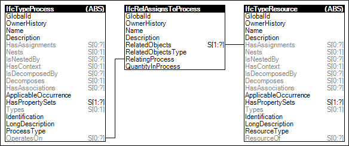

Link to this page
Link to this pageProcess types may have assignments indicating re-usable resource types for which occurrences may be consumed or occupied by occurrences of the process type. An example of such assignment is a concrete mixer resource type for delivering concrete.
Figure 76 illustrates an instance diagram.
 |
Figure 76 — Process Type Assignment |